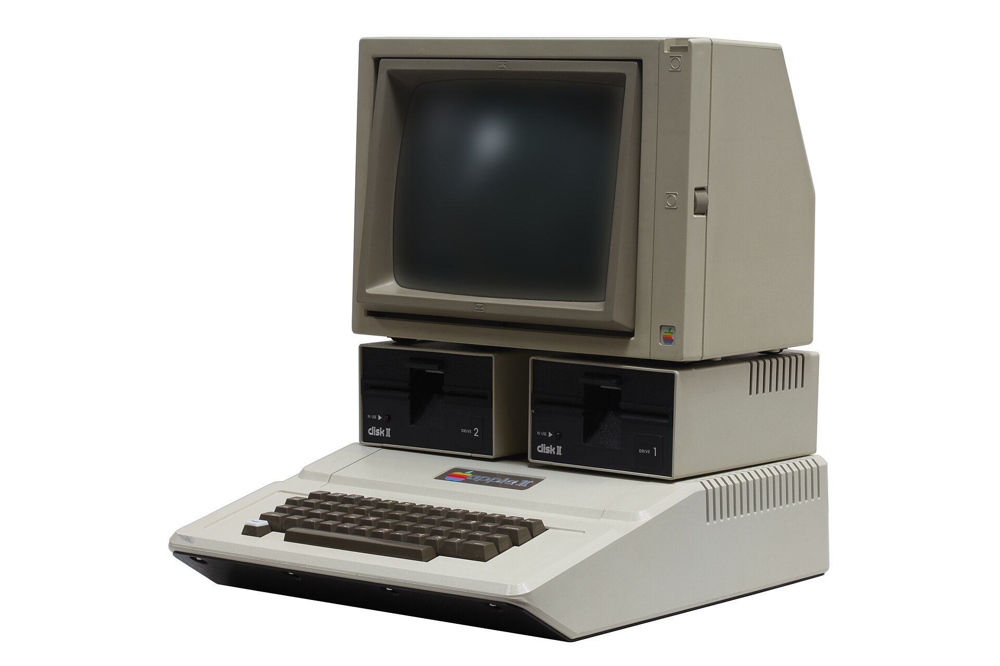
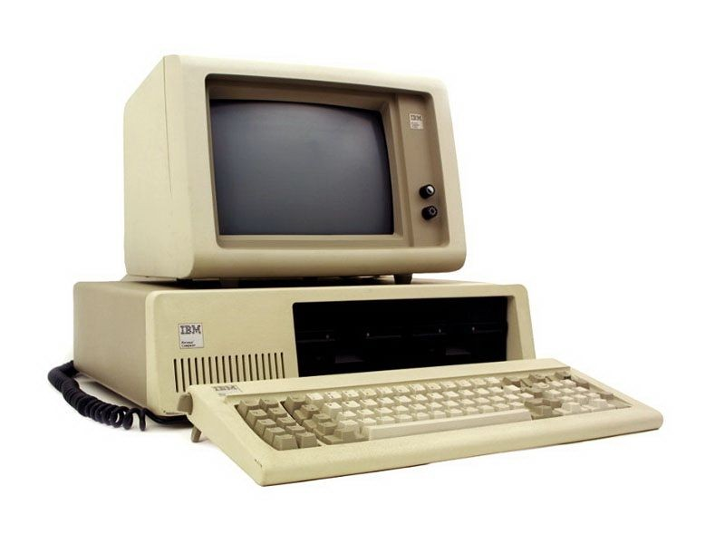
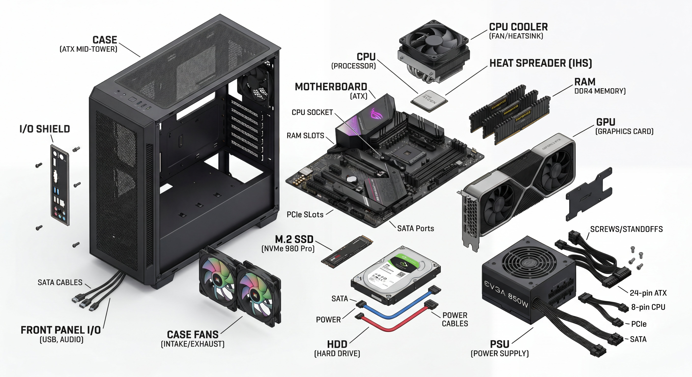

Forty-five years of computing in eight minutes. Same four jobs the whole time.
Layer 1 · Computer · 8 min


Meet the ancestors. The first computer a family could buy, and the first computer a company could trust. Forty-five years later, your laptop is still doing the same things — just faster, smaller, more of everything.

Forty-five years after the IBM PC, this is what's inside a desktop right now. Same jobs being done — but look at the parts.
Every computer — IBM PC, today's monster, your phone, a cloud server — has the same four roles.
| Role | What it does | Hardware today |
|---|---|---|
| Compute | Does the thinking. Runs your code, runs your game, runs everything. | CPU |
| Memory | Where work happens right now. Disappears when you reboot. | RAM |
| Storage | What survives a reboot. Files, programs, photos, OS. | SSD / HDD |
| Network | How it talks to other computers. The internet doesn't work without this. | NIC |
So how did we get from beige boxes to that monster? Eight milestones did the work — three of them really matter for what we're building toward today.
Forty-five years, eight milestones, faster parts every decade.
But here's what hasn't changed: none of this does anything by itself. The CPU, the RAM, the storage, the network — dead silicon without something to wake them up, coordinate them, and decide which program runs when.
That coordinator is the operating system. Next layer.